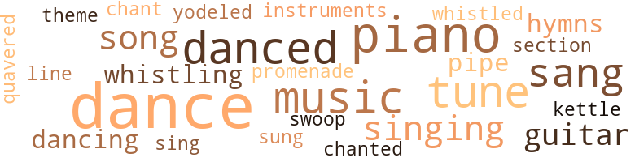
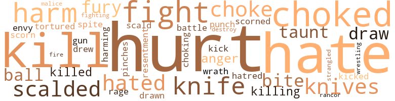
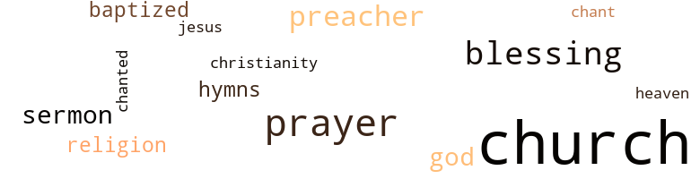

Weddin' Trimmin's, by Harris, Mattie Virginia (1949)
84 music-related terms matched in this text.
Most frequent terms in this topic: dance (14); piano (9); danced (7); music (6); sang (6)
chant.n.01
Definition: a repetitive song in which as many syllables as necessary are assigned to a single tone
| word | sentence |
|---|---|
| chant | A sort of chant went round . |
dance.n.01
Definition: an artistic form of nonverbal communication
| word | sentence |
|---|---|
| dance | " It 's a dance , Lucy . " |
| dance | " A dance ! " |
| dances | Dempsey used to tell about dances and the dreadful things that sometimes happened at them . |
| dance | Lucy watched interestedly the large circle of couples bend and weave and cross hands in the square dance . |
| dance | Marty and Melva spoke when they were forced to join hands in the dance , but they said no more . |
| dance | " Took two goody-goodies to a dance , " he laughed . |
| dance | She would have until the other night at the dance , she thought . |
| dance | " We 're going to another dance - and we 're not taking Alice , " he said . |
| dance | A dance ! |
| dance | " Will there be anybody at the dance that I know ? " she asked him . |
| dance | They flew along the road and soon were at the dance . |
| dance | After a long time the dance began to break up . |
| dance | But she had to be satisfied with somebody 's pink satin one out of the missionary barrel and had not worn it until the night of the dance , and then to outdo Marty Anderson with Alonza . |
dance.v.03
Definition: skip, leap, or move up and down or sideways
| word | sentence |
|---|---|
| danced | Over the cotton field heat waves danced from the hot , sultry late-August day . |
| dancing | " Let 's try on Liza 's wedding things , " she said , her blue eyes dancing like Mis ' Bess 's . |
| danced | Softly humming , she whirled and danced and bent to sprinkle more , her hum fitted to the sway and motion of her body and drifting into words of her own making , " Ummmm , Buuuu , Ummmm , Buuuu , Ummmm - - - " Up and down she went . |
| dance | " I 'll dance at your and Calvin 's wedding for it . " |
| dancing | Again they promenaded , partners dancing in quick , skipping steps . |
| danced | He watched them leave the room to cool and have a drink before they danced again . |
| danced | Alice danced with a dark boy she did n't know . |
| dance | He led her out to dance , bending to whisper love words into her ear . |
| danced | Alice and her partner danced over to give the swing , then square . |
| danced | As they danced , Lucy could think of nothing to say . |
| danced | While they danced , her mind worked fast to think of quick answers to his love-making . |
guitar.n.01
Definition: a stringed instrument usually having six strings; played by strumming or plucking
| word | sentence |
|---|---|
| guitar | " Go get your guitar , Alonza , and play for Lucy while I talk with Aunt Julina , " Alice said . |
| guitar | He still strummed his guitar for her answer . |
| guitar | Alonza brought his guitar and strummed to Alice 's playing . |
hymn.n.01
Definition: a song of praise (to God or to a saint or to a nation)
| word | sentence |
|---|---|
| hymns | " Play some of the hymns I heard you playing the other day , " Mr. Maize said . |
| hymns | She played several hymns , then closed the piano and stood by the window to watch Alonza , his slim form flat on the ground while he worked with his car engine . |
kettle.n.04
Definition: a large hemispherical brass or copper percussion instrument with a drumhead that can be tuned by adjusting the tension on it
| word | sentence |
|---|---|
| kettle | But then he glanced about the walls at the buckets and the iron pots , and at the kettle on the stove . |
music.n.01
Definition: an artistic form of auditory communication incorporating instrumental or vocal tones in a structured and continuous manner
| word | sentence |
|---|---|
| music | Then more words , '' They have contributed to American music and literature and art -------- " The speaker 's clear voice rang into the stillness , but her mind wandered , and before she could realize it , he was sitting down . |
| music | Miss Jerry hardly talked with him of serious things ; her time was taken up with music and with going places . |
| Music | Music sounded drinking soft drinks and laughing and talking - loudly , some and the thud and shuffle of feet . |
| music | By the time the music was tuned , he was there . |
| music | He listened for a moment to the music , then went on . |
| music | Lucy looked at Alonza turning pages of music . |
| music | " It 's time for you to practice your music , Jerry . |
musical_instrument.n.01
Definition: any of various devices or contrivances that can be used to produce musical tones or sounds
| word | sentence |
|---|---|
| instruments | Upstairs stringed instruments tuned up . |
piano.n.01
Definition: a keyboard instrument that is played by depressing keys that cause hammers to strike tuned strings and produce sounds
| word | sentence |
|---|---|
| piano | She rubbed the piano well , then sat for a little on the fringed couch , digging her toes into the soft carpet . |
| piano | A piano chord sounded , and they marched down the aisle and on to the rostrum . |
| piano | While Lucy waited she glanced about the parlor with its polished furniture and pictures on the wall , a piano in the corner , overstuffed lounge and chairs . |
| piano | " Come play the piano , Lucy , " he begged . |
| piano | Opening the piano , she played " What a Friend We Have in Jesus , " singing it softly , Mr. Maize humming with her behind his newspaper . |
| piano | She played several hymns , then closed the piano and stood by the window to watch Alonza , his slim form flat on the ground while he worked with his car engine . |
| piano | Alice played the piano and sang , Lucy and Alonza joining with her . |
| piano | Lucy nodded toward the piano . |
| piano | Miss Jerry 'll be practicin ' the piano . |
pipe.n.04
Definition: a tubular wind instrument
| word | sentence |
|---|---|
| pipe | Daddy Lem sat in the door to smoke his pipe . |
| pipe | " Hey , Tecumseh ! " he laughed over his pipe . |
promenade.n.01
Definition: a formal ball held for a school class toward the end of the academic year
| word | sentence |
|---|---|
| promenade | All promenade ! " |
section.n.01
Definition: a self-contained part of a larger composition (written or musical)
| word | sentence |
|---|---|
| section | They stopped before a two-story frame house in the Negro section of town . |
sing.v.02
Definition: produce tones with the voice
| word | sentence |
|---|---|
| sung | Not since they had come up to Mr. John 's to live had Aunt Julina sung like that , deep and far away sounding , as she used to sometimes before they left Daddy Lem 's . |
| sing | Nobody except Aunt Julina could sing him to sleep like she could . |
| sang | After a while Daddy Lem sang " Jesus , Lover of My Soul , " then " Come , Thou Fount of Every Blessing " - church songs he 'd learned long ago before the Civil War , he said . |
| sang | A little way out of town Dempsey led them in one of her and Mis ' Vicey 's Baptist songs : The ol' ark a moverin ' along , a moverin ' along , Oh , the ol' ark a moverin ' along - " The others sang with her , but Lucy did n't feel like it ; she felt sick down inside her . |
| sang | The choir sang , but Lucy did n't hear . |
| sang | Down among the willows a night bird sang . |
| sang | On among other shouters Aunt Julina sang and clapped her way , touching this person and that . |
| sang | Alice played the piano and sang , Lucy and Alonza joining with her . |
singing.n.01
Definition: the act of singing vocal music
| word | sentence |
|---|---|
| singing | His singing was like the time he hauled away his dead horse when it had to be prized out of the swamp . |
| singing | Across the woods came the sound of a horse trot and Calvin 's voice singing a gay tune : " De long-tail filly an ' de big black boss - Doodah ! |
| singing | His other hope would have to he denied him ... He ceased his singing to gaze adoringly . |
| singing | Opening the piano , she played " What a Friend We Have in Jesus , " singing it softly , Mr. Maize humming with her behind his newspaper . |
song.n.01
Definition: a short musical composition with words
| word | sentence |
|---|---|
| songs | After a while Daddy Lem sang " Jesus , Lover of My Soul , " then " Come , Thou Fount of Every Blessing " - church songs he 'd learned long ago before the Civil War , he said . |
| songs | A little way out of town Dempsey led them in one of her and Mis ' Vicey 's Baptist songs : The ol' ark a moverin ' along , a moverin ' along , Oh , the ol' ark a moverin ' along - " The others sang with her , but Lucy did n't feel like it ; she felt sick down inside her . |
| song | Ev set up a song . |
| song | Lucy walked with her , only listening while Dempsey hummed snatches of song . |
swoop.n.01
Definition: (music) rapid sliding up or down the musical scale
| word | sentence |
|---|---|
| swoop | " Sumpen might swoop right outa dem closets or from in dat big chest ! " |
theme.n.03
Definition: (music) melodic subject of a musical composition
| word | sentence |
|---|---|
| theme | " Oh , she repeats her favorite theme , " Alice laughed . |
tone.v.01
Definition: utter monotonously and repetitively and rhythmically
| word | sentence |
|---|---|
| chanted | He chanted off the ritual Miss Jerry had put him through . |
tune.n.01
Definition: a succession of notes forming a distinctive sequence
| word | sentence |
|---|---|
| tunes | Her tunes were all sad these days . |
| line | Miss Bost rang the bell again , and the children marched in line again . |
| tune | Across the woods came the sound of a horse trot and Calvin 's voice singing a gay tune : " De long-tail filly an ' de big black boss - Doodah ! |
| tune | Leaning from his saddle he unfastened the gate and cantered his dark bay colt toward the strawberry patch , not halting with his tune : " Gwine to ride all night ! |
| tunes | While Alice and Aunt Julina talked , he played and strummed for Lucy , now and then humming low his tunes between gay snatches of talk . |
| tune | Alonza whistled a tune as he sped the car along the highway . |
| tunes | " I only play by ear the tunes Miss Jerry used to teach me , " Lucy said , smiling , " and sometimes I make up my tunes myself . " |
| tunes | " I only play by ear the tunes Miss Jerry used to teach me , " Lucy said , smiling , " and sometimes I make up my tunes myself . " |
warble.v.01
Definition: sing or play with trills, alternating with the half note above or below
| word | sentence |
|---|---|
| quavered | Aunt Julina 's old voice quavered in the darkness . |
whistle.v.01
Definition: make whistling sounds
| word | sentence |
|---|---|
| whistled | Alonza whistled a tune as he sped the car along the highway . |
| whistling | When Calvin came whistling in the back way , she met him in the kitchen . |
| Whistling | Whistling low , he bent busily to his cotton-topping . |
yodel.v.01
Definition: sing by changing register; sing by yodeling
| word | sentence |
|---|---|
| yodeled | Across the pasture Ev 's voice yodeled into the night . |
113 violence-related terms matched in this text.
Most frequent terms in this topic: hurt (17); kill (8); hate (7); choked (7); fight (5)
anger.n.01
Definition: a strong emotion; a feeling that is oriented toward some real or supposed grievance
| word | sentence |
|---|---|
| Anger | Anger rose in Lucy . |
| anger | Alonza might get over his anger enough to drive over ; she would like to talk with him , might get him to promise to behave himself . |
battle.v.01
Definition: battle or contend against in or as if in a battle
| word | sentence |
|---|---|
| battle | She would have promise of the school ; she was smarter than Ev and she would battle his will I " The county superintendent wants me to have it , " she told him , meeting his taunting eyes . |
blister.v.02
Definition: subject to harsh criticism
| word | sentence |
|---|---|
| scalded | She stopped at the door where Aunt Julina scalded the furniture . |
| scalded | She scalded the bed cracks a second time . |
| scald | " When you gets done wid washin ' dishes , " Aunt Julina said after the blessing , " you have to get the rest of the furniture outeh the otheh room so 's I can scald an ' scour between dis an ' sundown , 'cause I smelt a bedbug somewheah last night , an ' I ca n't rest wheah no c ' inches is crawlin ' . |
| scalded | Her summer cleaning was all done , the floors scrubbed , the beds scalded and sunned , curtains starched and ironed to stand prettily . |
contemn.v.01
Definition: look down on with disdain
| word | sentence |
|---|---|
| scorn | But Mrs. Maize had no reason to scorn Aunt Julina and Daddy Lem . |
| scorned | Mrs. Maize had scorned her ! |
destroy.v.04
Definition: put (an animal) to death
| word | sentence |
|---|---|
| destroy | " No , I 'd like you to destroy it , " she said , " destroy all you have from him . |
draw.v.23
Definition: pull (a person) apart with four horses tied to his extremities, so as to execute him
| word | sentence |
|---|---|
| draw | Tomorrow I mean to draw up a deed to each of you for the house you live in and a few acres of land . " |
| drawn | He sat on the floor , his long legs drawn up on the step . |
| drew | Seeing her coming , Alonza drew up his horses and waited , fanning with his wide felt hat . |
| draw | " I can draw wateh fo ' yo ' wash an ' fo ' the horses to drink , " he glanced toward the barn . |
envy.n.01
Definition: a feeling of grudging admiration and desire to have something that is possessed by another
| word | sentence |
|---|---|
| envy | Dressing now for their graduation exercises , Lucy studied Alice with friendly envy . |
fight.n.05
Definition: a boxing or wrestling match
| word | sentence |
|---|---|
| fight | Miss Bost must not have told about the book or the fight or anything ! |
| fight | " There 's the only person I ever had a fight with , " she laughed to Alonza . |
| fight | Has he ever given you any trouble , been in any fight or anything ? " |
| fight | " I had a fight with them one day . " |
fight.v.02
Definition: fight against or resist strongly
| word | sentence |
|---|---|
| fight | She would fight this dangerous feeling for Doctor Bob until she conquered itl Each quick step down the stairs in her high-heeled slippers made a pleasant rustle of her new underslip and organdie dress . |
| Fight | Fight it ! " she whispered , tiptoeing from the room when she heard her father coming . |
| fighting | When doctor Logan pronounced pneumonia , Aunt Julina set grimly and prayerfully to fighting for Lucy 's life . |
fury.n.01
Definition: a feeling of intense anger
| word | sentence |
|---|---|
| fury | Sudden fury swept over Lucy - at Aunt Julina - at the clerk - at - she knew not what . |
| rage | " Do you know about him ? " she demanded , her voice husky with rage and shame . |
| Fury | Fury mounted with her grief . |
gag.v.06
Definition: cause to retch or choke
| word | sentence |
|---|---|
| choked | Lucy 's throat choked and she could n't answer . |
| choked | She almost choked . |
| choked | Her throat was full and choked when she got in at the back with Calvin , their feet swinging . |
| choked | Tears burned her eyes as she made the beds , and her throat choked , but she gritted her teeth . |
| choked | A automobile had run oveh him , but dem officers say he was choked to death an ' laid in the road . |
| choked | Calvin 's father - had choked a man ! |
| choking | With a choking sob , Lucy dropped her head on her arm . |
| choke | " I 'd like to choke Alonza ! " |
| choke | Buck lay stupidly in Dempsey 's arms , strangled as if he would choke . |
| chokes | When he chokes , be quick and try to help him get rid of the phlegm in his throat , " he said , giving the antitoxin . |
| choked | He caught his breath , choked and went limp in her arms , his little frame jerking . |
gun.n.01
Definition: a weapon that discharges a missile at high velocity (especially from a metal tube or barrel)
| word | sentence |
|---|---|
| gun | " Well , I 'll be a son of a gun ! " he sputtered while she hurried on . |
harm.v.01
Definition: cause or do harm to
| word | sentence |
|---|---|
| harming | " We 'll teach him about harming a white girl ! " |
hate.n.01
Definition: the emotion of intense dislike; a feeling of dislike so strong that it demands action
| word | sentence |
|---|---|
| hatred | Now she could understand Alice 's hatred toward white people - her fear that she might - think too much of - Doctor Bob . |
| hate | Her body stiffened with hate . |
| hate | " You say he show a heap a hate agin ' 'em ? " |
hate.v.01
Definition: dislike intensely; feel antipathy or aversion towards
| word | sentence |
|---|---|
| hates | " I hates to whip you , Honey , when I knows how you grievin ' about us gon na move . " |
| hates | I hates secondhanded books . " |
| hates | " I hates fo ' you not to get the things you wants , but I done the best I could . " |
| hated | Could there be some special reason more than that she hated all white people ? |
| hate | ' Course Dempsey not his child , but he hate fo ' a disgrace to come to his house ... She always been a bad girl , " her tired old voice droned on . |
| hate | But I hate it ! |
| hates | " I hates fo ' you to have to go , Honey , but I 's glad you learnin to take yo ' place wid the sick . " |
| hated | White niggeh I Plow she had hated those words and what they meant ! " |
| hate | " We 'll hate to see you leave us , Lucy , " Mr. John said , putting a stick of wood in the stove . |
| hate | " Do you hate us now , Lucy ? " |
| hated | " I guess I 've never hated you , Mis ' Bess . " |
| hate | I hate to think of Aunt Julina having to leave us ; I 'm sure she 's thought she would stay the rest of her life . " |
hurt.v.04
Definition: cause damage or affect negatively
| word | sentence |
|---|---|
| hurt | Anybody to be hurt except Aunt Julina ! |
injury.n.01
Definition: any physical damage to the body caused by violence or accident or fracture etc.
| word | sentence |
|---|---|
| hurt | A swift hurt look come over Aunt Julina 's face , but she swiftly put it away with a smile . |
| hurt | But now the stripes would help let out the hurt in her heart ! |
| hurt | " Effen it was n't fo ' Misteh Lemmons needin ' me wid unloadin ' the cotton I 'd stay heah an ' work , " Boy said , standing first on one foot then on the other to lighten the hurt of his tight shoes . |
| hurt | Friendship with a man like him might help put behind her the hurt in her heart for Doctor Bob ---- " My people are here , " Alice announced when she went in . |
| harm | " Do n't need two to keep harm off Lucy , " he said . |
| harm | " We did n't mean any harm , Aunt Julina , " Alonza said soothingly . |
| hurt | She still was hiding her hurt . |
| harm | " Effen you 'd a been runnin ' across my path , " she scolded , " I 'd a had to run back ' ards to keep harm off . " |
| harm | Finally he spoke , " I guesses it not any harm to tell it now . |
| harm | He did n't know anything about dat , but when dat baby come dis evenin ' down theah wheah Elmer been workin ' , dat white girl 's daddy make her tell whose it is an ' she make lak Calvin the one what harm her 'cause he sometimes down theah wid Elmer befo ' he left . |
| hurt | With a quick hurt glance at her , he turned and went to his car . |
| hurt | " Is she ve ' y bad hurt ? " |
kick_back.v.02
Definition: spring back, as from a forceful thrust
| word | sentence |
|---|---|
| kick | I 'll unbutton the shoes and you kick out of them while we 're getting the dress off . " |
| kicked | She bit and scratched with her bony claws , but he kept her clamped while Lucy kicked her shins . |
kill.v.10
Definition: cause the death of, without intention
| word | sentence |
|---|---|
| kill | Early next morning Daddy Lem and the colored men came up to kill hogs . |
| kill | " Aunt Julina not got none neitheh an ' I does n't want her eveh to know I got the book ; it would kill her effen she know ! " |
| kill | She waited until Sunday morning to kill the speckled rooster Mis ' Bess gave her . |
| kill | " Honey , " Aunt Julina 's voice dropped into a droning weariness , " you done kill my hopes dat I always had fo ' you . " |
| killing | Elmer accused of killing a man - run away ! |
| kill | " Alonza , Elmer did n't kill anybody , " she said wretchedly . |
| kill | " Auntie " - the sheriff 's sharp gray eyes looked straight at her - " where did Calvin and Elmer get the liquor that caused him to kill Lin Barney Saturday night ? " |
| killed | But if Calvin killed the Negro , why did Elmer run away ? |
| killed | Neither was there enough evidence that Lin Barney was intentionally killed . |
| kill | " Dis 'll kill Lemmons , " Aunt Julina said . |
| kill | Calvin had bought pigs that would be ready to kill by fall . |
killing.n.02
Definition: the act of terminating a life
| word | sentence |
|---|---|
| killing | Whatever he knew about the killing , he would never tell any officers , but - he would eternally hold it over whoever did it ! |
knife.n.02
Definition: a weapon with a handle and blade with a sharp point
| word | sentence |
|---|---|
| knife | It seemed to Lucy a sharp knife had been stuck straight into her . |
| knives | Aunt Julina sharpened knives on the worn old whetrock . |
| knives | She looked down at her black-handled knives and forks , and tablecloth sewed together out of four flour sacks with the letters soaked out of them . |
| knives | Lucy set the plates and laid the black-handled forks and knives , then filled the teacups with water . |
| knife | He fingered ' nervously with his fork and knife , his mouth twitching . |
| knife | Intently she studied Alonza 's mother , her restless gray eyes that noted quickly what was needed on the table , a knife or a fork or a spoon . |
| knife | Lucy 's hands pressed hard on her knife and fork as she watched Mrs. Maize 's expression . |
malice.n.01
Definition: feeling a need to see others suffer
| word | sentence |
|---|---|
| spite | Lucy 's voice was sad in spite of herself . |
| malice | But her mischievous glance held no malice toward Lucy . |
musket_ball.n.01
Definition: a solid projectile that is shot by a musket
| word | sentence |
|---|---|
| balls | Outside , the cedar trees dripped drearily , their seed balls squashed and mushy yellow . |
| ball | Dempsey did n't care it she did get it ; she just wrapped her kinks in ball thread to keep the naps out until Sunday . |
open_fire.v.01
Definition: start firing a weapon
| word | sentence |
|---|---|
| fire | If only Aunt Julina could talk it away like she could fire ! |
pain.v.02
Definition: cause emotional anguish or make miserable
| word | sentence |
|---|---|
| hurt | How could Aunt Julina go on acting as if it did n't hurt to have to move ? |
| hurt | With her arm pressed tight against her coat , she waited , her heart throbbing till it cut and hurt . |
| hurt | " He gon na hurt you sometime , " Calvin said . |
| hurt | " He not gon na hurt you , " Lucy spoke out . |
| hurt | If Alice knew , she had n't meant to hurt Lucy . |
| hurt | Even she did n't want Alonza to hurt you , Lucy . |
| hurt | " I not gon na hurt you , " he asserted , his slick head bent close . |
| hurt | Suddenly she realized that for the baby 's sake he would n't hurt her , and in his nigger way he honestly wanted to help her - but for his own pleasure . |
| hurt | " Dey did n't hurt you all nor nothin ' , did dey ? " |
pinch.n.02
Definition: an injury resulting from getting some body part squeezed
| word | sentence |
|---|---|
| pinches | She made out round pinches of dough into flat flaky biscuits . |
punch.n.01
Definition: (boxing) a blow with the fist
| word | sentence |
|---|---|
| punch | On the way back to the seat Maggie gave a punch with her elbow , but Lucy pretended not to notice . |
resentment.n.01
Definition: a feeling of deep and bitter anger and ill-will
| word | sentence |
|---|---|
| Resentment | Resentment stirred in her heart toward Mrs. Maize - hatred . |
| rancor | No rancor ever entered her heart toward Mr. John 's folks , toward any nice white folks . |
sting.n.03
Definition: a painful wound caused by the thrust of an insect's stinger into skin
| word | sentence |
|---|---|
| bite | Boy took a bite of biscuit . |
| bite | " I 'll go now an ' make one in the stove so 's we can have us a bite to eat . |
strangle.v.01
Definition: kill by squeezing the throat of so as to cut off the air
| word | sentence |
|---|---|
| strangled | Buck lay stupidly in Dempsey 's arms , strangled as if he would choke . |
torment.v.01
Definition: torment emotionally or mentally
| word | sentence |
|---|---|
| Tortured | Tortured with thoughts of Elmer , Lucy made no reply . |
twit.n.02
Definition: aggravation by deriding or mocking or criticizing
| word | sentence |
|---|---|
| taunt | Maggie came dose , an ugly taunt in her beady eyes . |
| taunt | Maggie 's taunt and fear about what Miss Bost would say about the stolen book was all she could think about . |
wrath.n.01
Definition: intense anger (usually on an epic scale)
| word | sentence |
|---|---|
| wrath | Coming to the picture of Jesus , she spoke to it in wrath , " Neveh paid no ' tention to what I begged an ' begged you fo ' , did you ? |
wrestle.v.01
Definition: combat to overcome an opposing tendency or force
| word | sentence |
|---|---|
| wrestling | Boy held up wrestling with Elmer . |
58 religion-related terms matched in this text.
Most frequent terms in this topic: church (24); prayer (5); blessing (5); preacher (4); sermon (3)
baptize.v.01
Definition: administer baptism to
| word | sentence |
|---|---|
| baptized | " I 've baptized you , Lucy , as a tiny baby , " he said , " and took you into the church when you were a little girl . |
| baptized | " Is you punishin ' me 'cause I neveh had him baptized an ' not take him to no chu ' ch ? " |
blessing.n.05
Definition: the act of praying for divine protection
| word | sentence |
|---|---|
| blessing | After the blessing , Aunt Julina helped Boy 's and Lucy 's plates with mush and gravy , then took out a helping for herself . |
| blessing | When Calvin came they had the blessing ; then Aunt Julina helped Lucy to the chicken breast . |
| blessing | " When you gets done wid washin ' dishes , " Aunt Julina said after the blessing , " you have to get the rest of the furniture outeh the otheh room so 's I can scald an ' scour between dis an ' sundown , 'cause I smelt a bedbug somewheah last night , an ' I ca n't rest wheah no c ' inches is crawlin ' . |
| blessing | When he had asked the blessing , Mrs. Maize began pouring coffee . |
| blessing | They could n't wait for the blessing before they told Mr. John . |
chant.n.01
Definition: a repetitive song in which as many syllables as necessary are assigned to a single tone
| word | sentence |
|---|---|
| chant | A sort of chant went round . |
christendom.n.01
Definition: the collective body of Christians throughout the world and history (found predominantly in Europe and the Americas and Australia)
| word | sentence |
|---|---|
| Christianity | Christianity will in the end be the chief force that will hasten such an order . |
church.n.02
Definition: a place for public (especially Christian) worship
| word | sentence |
|---|---|
| church | Around the garden they streaked , not talking until they were down the path leading to the road toward the church . |
| church | The Fish Fry was well started when they came to the church grounds . |
| church | Hardly had he turned before Lucy and Boy set out and off from the church grounds and along the woods path as fast as their feet would travel , the dead sticks crackling under them . |
| church | After a while Daddy Lem sang " Jesus , Lover of My Soul , " then " Come , Thou Fount of Every Blessing " - church songs he 'd learned long ago before the Civil War , he said . |
| church | Passing the white folks ' brick church , he told of slaves belonging there long ago who sat in the gallery while their masters and families sat in pews below - the ones owning Negroes on one side of the railing , and those not , on the other . |
| church | If it were not that Alice was coming to church , she would n't want to go . |
| church | Anybody that stayed at Aunt Julina 's house would always go to church . |
| church | The church grounds were already crowded , wagons and buggies coming from every direction . |
| church | Then he went with his mother to the church . |
| church | Lucy studied Alonza 's handsome form as he ushered his mother into church . |
| church | Without effort he would be given the thing she would give most in the world for I She and Alice went on to the church . |
| church | Through with dinner and the baskets put away , they went back into the church . |
| church | But when she came over to talk after church , he only sulked for a night or two . |
| church | She sat quietly while they drove down the road to the church . |
| church | As soon they drove onto the church grounds she and Aunt Julina got out and left Daddy Lem and Calvin to hitch the horses . |
| church | Near the church door Aunt Julina gave a grunt . |
| church | A quiet came over the church . |
| church | Nobody seemed to come , nor was there anywhere to go except to church or to town . |
| church | Aunt Julina and Daddy Lem did n't like it , that they did n't go to church . |
| church | What had going to church - religion - ever done for Aunt Julina and Daddy Lem ? |
| church | Then , too , Aunt Julina might let her go to the Fish Fry at the church if she did things well . |
church.n.04
Definition: the body of people who attend or belong to a particular local church
| word | sentence |
|---|---|
| Church | They crossed into Church Street . |
| church | The church clock woke her , striking three . |
| church | When church was over they went out to stand again for a while under the trees . |
| church | " I 've baptized you , Lucy , as a tiny baby , " he said , " and took you into the church when you were a little girl . |
eden.n.01
Definition: any place of complete bliss and delight and peace
| word | sentence |
|---|---|
| heaven | God in heaven , what could she do against a crowd ? |
god.n.03
Definition: a man of such superior qualities that he seems like a deity to other people
| word | sentence |
|---|---|
| God | But colored people 's shouting had never moved God in their favor ! |
| God | God in heaven , what could she do against a crowd ? |
| God | What it would be , God only knew ! |
hymn.n.01
Definition: a song of praise (to God or to a saint or to a nation)
| word | sentence |
|---|---|
| hymns | " Play some of the hymns I heard you playing the other day , " Mr. Maize said . |
| hymns | She played several hymns , then closed the piano and stood by the window to watch Alonza , his slim form flat on the ground while he worked with his car engine . |
jesus.n.01
Definition: a teacher and prophet born in Bethlehem and active in Nazareth; his life and sermons form the basis for Christianity (circa 4 BC - AD 29)
| word | sentence |
|---|---|
| Jesus | Wonder if Jesus ever had to move I Maybe if she prayed to him hard as she could , he might put it into Mr. John 's mind not to have her and Aunt Julina go away from the Big House . |
prayer.n.01
Definition: the act of communicating with a deity (especially as a petition or in adoration or contrition or thanksgiving)
| word | sentence |
|---|---|
| prayer | Aunt Julina raised her hands in prayer , " The good Lawd is among us dis night . |
| prayers | When they had said their prayers , they undressed and went tiredly to bed on the high straw - tick . |
| prayer | When he had them join hands and offered a prayer , they were married . |
| prayer | " Is you yet studied out anything fo ' us to do , Honey ? " she asked when she had knelt for her prayer . |
| prayer | Aunt Julina raised her voice in prayer . |
| prayers | Soon as they could undress and say their prayers they went tiredly to bed . |
prayer.n.04
Definition: a fixed text used in praying
| word | sentence |
|---|---|
| prayer | Kneeling by the bed , she said her prayer : " Now I lay me down to sleep , I pray the Lawd my soul to keep . |
preacher.n.01
Definition: someone whose occupation is preaching the gospel
| word | sentence |
|---|---|
| preacher | She went up the aisle and far toward the pulpit where she could be sure to hear the preacher 's words . |
| preacher | The visiting preacher took his text and the sermon began . |
| preacher | It seemed , as they walked into the little white manse , that it was n't she and Alonza , but a couple she had read about in a book , going arm in arm up to the porch , with the preacher and his wife coming to meet them . |
| preacher | In a few minutes it was over and they were shaking hands with the preacher and his wife . |
religion.n.01
Definition: a strong belief in a supernatural power or powers that control human destiny
| word | sentence |
|---|---|
| religion | I pled wid her not to talk lak dat an ' I spoke to her about religion , but nothin ' I say put a silence on her . |
| religion | Aunt Julina 's religion was more than sincere . |
sermon.n.02
Definition: a moralistic rebuke
| word | sentence |
|---|---|
| sermon | With a tolerant smile at Alice 's same old sermon , Lucy took her place at the mirror . |
| sermon | All through the sermon she thought of it . |
| sermon | The visiting preacher took his text and the sermon began . |
tone.v.01
Definition: utter monotonously and repetitively and rhythmically
| word | sentence |
|---|---|
| chanted | He chanted off the ritual Miss Jerry had put him through . |